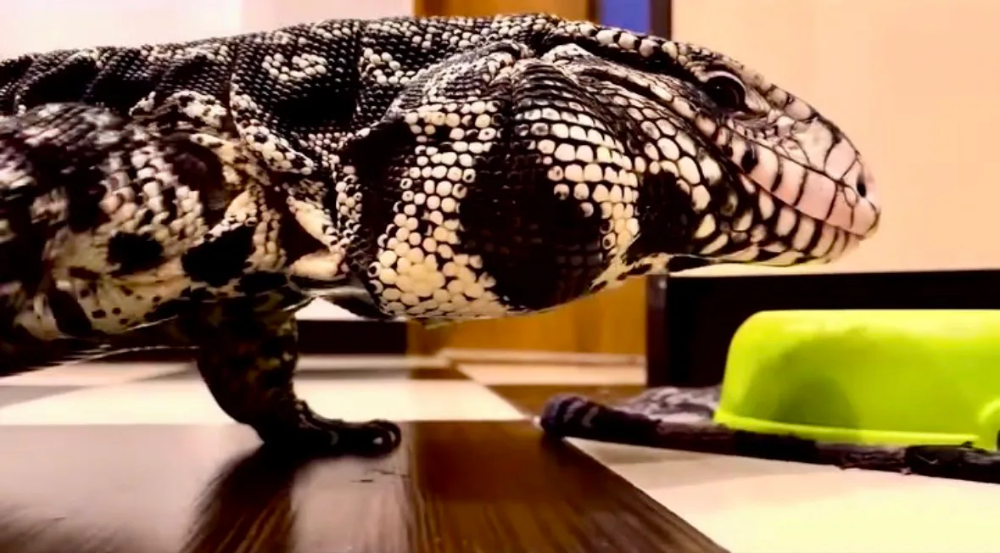
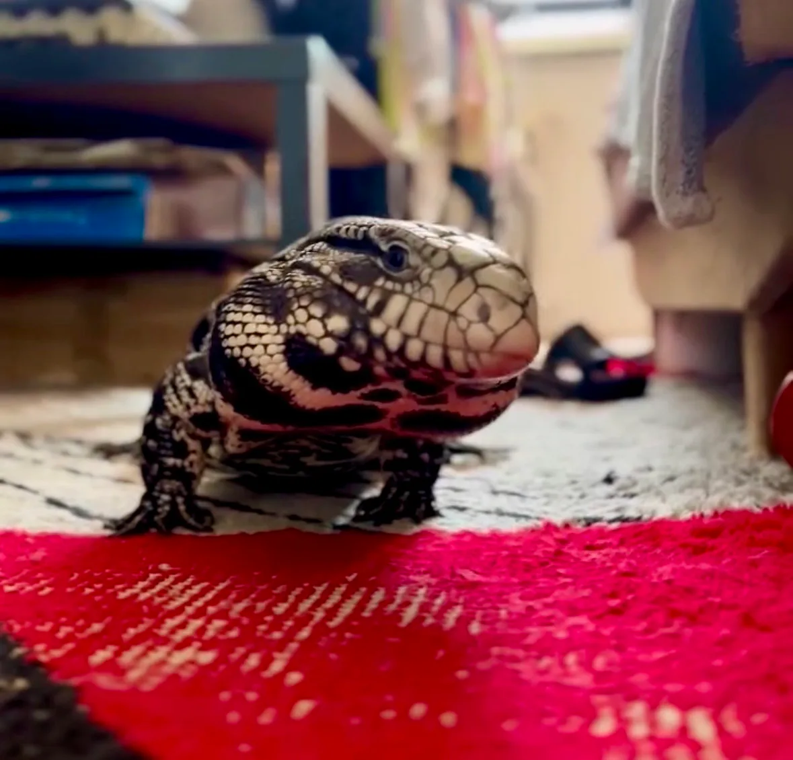
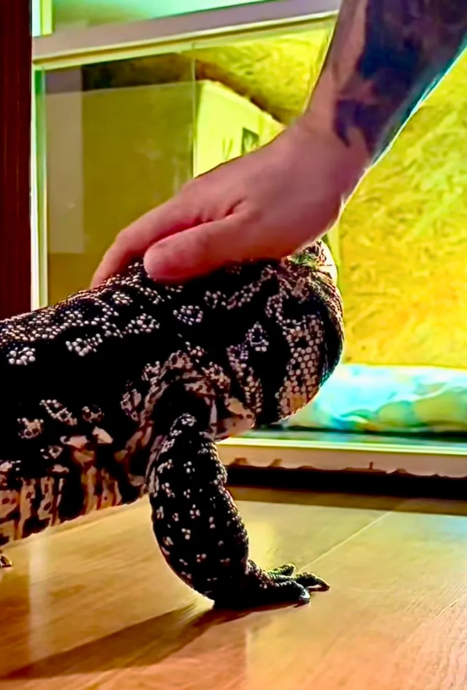

Krótka odpowiedź: może odróżniać znane warunki, ale nie wiemy, który sygnał jest najważniejszy
To, że Drago zachowuje się inaczej przy domownikach niż podczas opieki osób obcych, jest prawdziwą obserwacją z naszego domu. Podobnie jak to, że nauczył się przesuwać szybę terrarium i że potrafi upomnieć się o wyjście. Nie jest to jednak eksperyment, który rozstrzyga, czy rozpoznaje konkretną twarz, zapach, głos albo po prostu całą powtarzalną sytuację.
Najuczciwiej powiedzieć tak: teju może uczyć się ludzi, miejsc i następstw własnych działań. Drago ma wyraźne, powtarzalne skojarzenia z domową rutyną. Nie mamy natomiast podstaw, by z samego jego spokojnego zachowania wyciągać wniosek, że odczuwa wobec człowieka to samo, co pies wobec swojego opiekuna.
- Osobnik opisany w tekście
- Drago
- Gatunek
- Salvator merianae
- Poziom pewności
- Obserwacja: wysoki
Wyjaśnienie: umiarkowany
W tym wpisie wyraźnie rozdzielamy obserwacje dotyczące Drago od wyników badań nad gatunkiem albo innymi gadami. Brak badania nie oznacza, że dane zjawisko nie istnieje; oznacza tylko, że nie należy przedstawiać go jako udowodnionego.
Co obserwujemy u Drago
Drago nauczył się, że przesunięcie szyby daje efekt w postaci wyjścia z terrarium. Zabezpieczenie było konieczne, bo raz znaleziony sposób zaczął wykorzystywać ponownie. To dobry, codzienny przykład uczenia się związku między działaniem a jego skutkiem — bez potrzeby robienia z niego małego człowieka w łuskach.
Drugim czytelnym wzorcem jest wyjście z terrarium. Drago potrafi uderzać w szybę, kiedy chce zostać wypuszczony, i zwykle nie załatwia się w środku. Widzimy zatem powtarzalne zachowanie w konkretnym kontekście. Nie wiemy natomiast, czy „prosi” w ludzkim rozumieniu tego słowa. Ostrożniejszy opis brzmi: nauczył się, że określone zachowanie przy szybie wywołuje reakcję domowników.

Przy osobach, których dobrze nie zna, zwłaszcza podczas naszej nieobecności, potrafi nie wychodzić z terrarium. To wskazuje, że zmiana człowieka albo codziennej sekwencji ma dla niego znaczenie. Nie da się jednak na tej podstawie oddzielić zapachu, ruchu, sposobu otwierania terrarium, pory dnia i pozostałych elementów sytuacji.
„Inteligentny” nie znaczy „ludzki”
Słowo „inteligencja” łatwo zamienia się w konkurs, w którym jaszczurka ma wypaść jak pies, kot albo dziecko. To ślepa uliczka. W zachowaniu zwierzęcia bardziej użyteczne są konkretne pytania: czy uczy się powiązań, zapamiętuje miejsca, reaguje na zmianę i potrafi zmienić zachowanie, gdy wcześniejszy sposób przestaje działać?
- Uczenie asocjacyjne — powiązanie sygnału lub działania z jego skutkiem, na przykład szyby z możliwością wyjścia.
- Habituacja — stopniowe oswajanie się z powtarzalnym, niegroźnym bodźcem. Nie jest równoznaczne z „zaufaniem” w ludzkim sensie.
- Pamięć przestrzenna — zapamiętywanie układu otoczenia i miejsc, które przynoszą korzyść albo pozwalają się wycofać.
- Elastyczność zachowania — próbowanie rozwiązań i wracanie do tego, które wcześniej zadziałało.
Przegląd 92 nowszych badań nad uczeniem się nieptasich gadów opisuje między innymi warunkowanie, pamięć przestrzenną, rozwiązywanie nowych problemów oraz uczenie społeczne. To ważna korekta starego mitu, że gady są wyłącznie zbiorem odruchów. Nie pozwala jednak automatycznie przenieść wyniku z jednego gatunku na każdy inny. [1]
Jakich sygnałów może używać teju?
Najbardziej prawdopodobny wniosek, z umiarkowaną pewnością: Drago nie musi „wybierać” jednej cechy człowieka. Może korzystać z pakietu informacji: zapachu, rytmu kroków i ruchu, widoku sylwetki, pory obsługi terrarium, miejsca karmienia oraz kolejności zdarzeń w domu.
U łuskonośnych ogromne znaczenie ma chemiczne badanie otoczenia językiem i narządem lemieszowo-nosowym. U teju argentyńskich wykazano w testach z labiryntem Y, że potrafią podążać za śladami chemicznymi innych teju; późniejsze badanie wykazało też rozróżnianie śladów lipidów skóry. To mocny dowód na precyzyjną rolę bodźców chemicznych u tego gatunku, ale nie dowód, że teju rozpoznaje po zapachu konkretnego człowieka. [2][3]

Co mówią badania — i gdzie kończą się dane
Badania nad gadami rosną liczebnie, ale nadal obejmują mały wycinek ogromnej różnorodności gatunków. Dla pytania „czy dorosły Salvator merianae rozpoznaje swojego opiekuna?” nie znaleźliśmy kontrolowanego badania, które pozwalałoby odpowiedzieć bez zastrzeżeń. To jest granica wiedzy, a nie powód do snucia legend.
Możemy natomiast oprzeć się na dwóch rzeczach. Po pierwsze, gady potrafią uczyć się w wielu kontekstach — opisuje to szeroki przegląd literatury. Po drugie, sam S. merianae wykazuje w badaniach precyzyjne rozróżnianie śladów chemicznych współgatunkowców. Zestawione z zachowaniem Drago pozwala to mówić o uczeniu się i wrażliwości na zmianę kontekstu, ale nie o zmierzonej „więzi” z człowiekiem. [1][3]
Co należałoby sprawdzić, aby odpowiedzieć mocniej? Powtarzalny test, w którym Drago miałby do wyboru warunki różniące się tylko jednym bodźcem — na przykład zapachem lub obecnością określonej osoby — oraz porównanie wielu prób. Dopiero wtedy można byłoby odróżniać rozpoznanie człowieka od reakcji na całą rutynę.
Czego nie wolno dopowiadać
Łatwo jest napisać, że teju „kocha”, „obraża się” albo „wie, że zrobił źle”. Tyle że te zdania przypisują zwierzęciu bardzo konkretne stany psychiczne, których tu nie zmierzyliśmy. Mogą brzmieć sympatycznie, ale nie pomagają w dobrej opiece.
Równie nietrafione byłoby przeciwne uproszczenie: „to tylko instynkt”. Drago nie musi być podobny do psa, by uczyć się, pamiętać i mieć własne preferencje. Wystarczy traktować jego zachowanie poważnie, bez dopisywania mu ludzkiej historii.
Spokojny kontakt z domownikiem jest opisem zachowania Drago. Nie jest obietnicą, że każdy teju będzie tolerował dotyk, wyjścia lub obce osoby. Ból, okres rozrodczy, niewłaściwe warunki i sytuacja karmienia mogą wyraźnie zmienić reakcję nawet dobrze znanego zwierzęcia.
Co z tego wynika w codziennej opiece?
Najlepszą odpowiedzią na zachowanie teju nie jest testowanie go na siłę, lecz przewidywalność. Zamiast wielokrotnie wyciągać zwierzę tylko po to, by sprawdzić, czy „nadal mnie lubi”, warto dać mu czytelny rytm obsługi, możliwość wycofania się i spokojne, powtarzalne ruchy.
- Ucz się jego zwykłego rytmu. Zmiana apetytu, aktywności albo tolerancji kontaktu może być informacją o warunkach lub zdrowiu, a nie „złym humorze”.
- Nie wymuszaj kontaktu. Brak wyjścia z terrarium przy obcej osobie może być wyborem bezpieczniejszym niż próba przełamania zwierzęcia.
- Rozdziel obsługę i karmienie. Warto utrzymywać czytelne sygnały, a dłonie po kontakcie z karmówką myć przed każdym dotykaniem jaszczurki.
- Nie myl oswojenia z brakiem ryzyka. Drago, choć łagodny dla domowników, jako dorosły samiec podejmował próby polowania na surykatkę i interesował się kotem. Zwierzęta muszą być fizycznie oddzielane.

Pytania, które padają najczęściej
Czy teju może nauczyć się reagować na imię?
Może skojarzyć powtarzany dźwięk z obecnością człowieka, wyjściem albo pokarmem. Sama reakcja nie rozstrzyga, czy rozumie imię jako etykietę własnej osoby.
Czy spokojny teju będzie spokojny zawsze?
Nie. Reakcję mogą zmieniać zdrowie, temperatura, okres rozrodczy, nagły stres, karmienie i sposób obsługi. Dlatego zachowanie oceniamy w kontekście, a nie na podstawie jednego dobrego dnia.
Czy codzienny kontakt jest konieczny?
Nie powinien być obowiązkiem narzuconym zwierzęciu. Ważniejsze są właściwe warunki, wybór po stronie teju i bezpieczna, przewidywalna obsługa.
Wniosek: Drago nie musi być psem, żeby fascynować
Drago pokazuje, że teju może bardzo dobrze nauczyć się życia w konkretnym domu: skutecznego działania przy szybie, codziennego rytmu i różnicy między znanym a zmienionym otoczeniem. To wystarczająco ciekawe bez udawania, że wiemy dokładnie, co dzieje się w jego głowie.
Najlepsze, co możemy zrobić jako opiekunowie, to patrzeć uważnie, wyciągać wnioski tylko na miarę danych i urządzać zwierzęciu świat, w którym nie musi stale wybierać między stresem a próbą ucieczki.
Źródła i zakres opracowania
Tekst łączy opis zachowania Drago przekazany przez jego właściciela z publikacjami naukowymi. Badania cytowane poniżej nie są badaniami „relacji Drago z człowiekiem”; służą pokazaniu, co rzeczywiście wiadomo o uczeniu się gadów i chemicznej percepcji teju.
- Szabo, Noble i Whiting (2021), „Learning in non-avian reptiles 40 years on”. Systematyczny przegląd badań nad uczeniem się nieptasich gadów; DOI: 10.1111/brv.12658.
- Cousins i wsp. (2020), „Conspecific chemical cues facilitate mate trailing by invasive Argentine black and white tegus”. Testy w labiryncie Y z udziałem 14 teju argentyńskich.
- Cousins i wsp. (2023), „Skin lipids alone enable conspecific tracking in an invasive reptile”. Badanie rozróżniania i podążania za chemicznymi śladami współgatunkowców.
Źródła sprawdzono 6 września 2026. Artykuł edukacyjny nie zastępuje konsultacji z lekarzem weterynarii zajmującym się gadami.